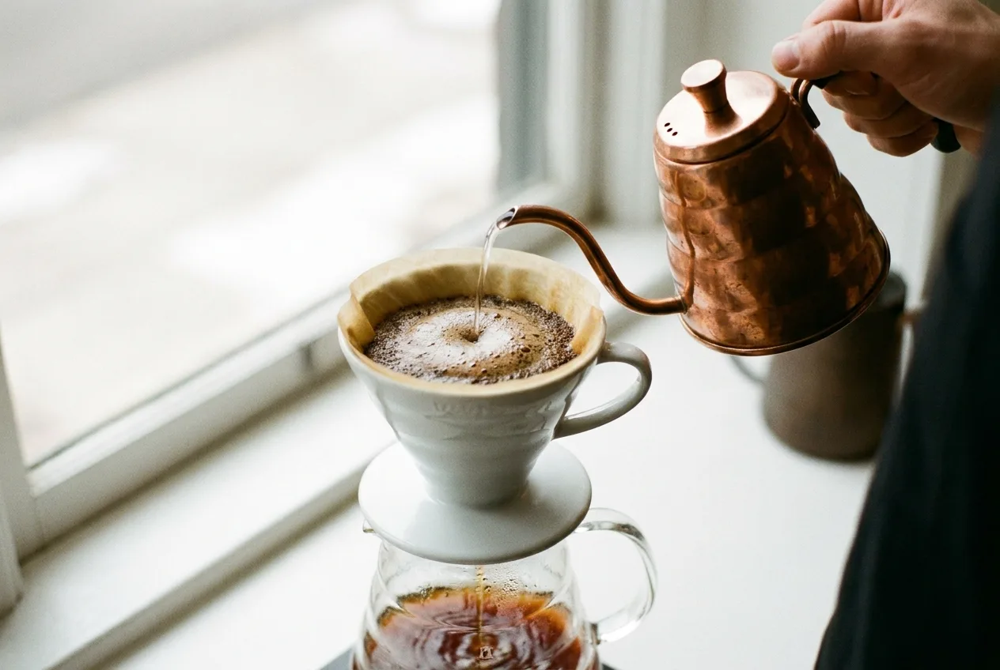

萃取的科學:手沖咖啡的黃金參數
咖啡的味道不是運氣,而是一道你能控制的方程式。理解萃取率與濃度,你在家就能把一杯手沖,校準到最甜美的位置。

把咖啡粉浸入熱水的那一刻,一場化學萃取就開始了。水會把咖啡裡的酸、糖、油脂與各式芳香化合物溶解出來——但它們溶出的速度並不一樣。先出來的是明亮的酸與香氣,接著是甜味與醇厚,最後才是苦澀與乾澀的木質與焦味。沖煮的全部技藝,其實就是「在恰當的時間點停手」。
兩個座標:萃取率與濃度
要把這件事說清楚,咖啡界用兩個量化指標來定位一杯咖啡:萃取率（Extraction Yield）與濃度（TDS,總溶解固體）。
萃取率指的是,有多少比例的咖啡粉被溶進了水裡。一份咖啡粉大約只有 28% 到 30% 的物質是「可溶」的,其餘是不溶的纖維。若你只溶出其中的 14%,通常會嚐到尖酸、青澀與空洞;若溶到 24% 以上,苦澀與雜味就會跑出來。濃度則是另一回事——它衡量最終那杯液體裡溶解物質的百分比,決定的是「濃」或「淡」的口感厚度。
萃取率管的是「好不好喝」,濃度管的是「濃不濃」。兩者獨立,卻常被初學者混為一談。
金杯理論:那一塊最甜美的窄窗
上世紀中葉,美國的咖啡研究替這兩個座標畫出了一塊「理想區」,後人稱之為「金杯（Golden Cup）」。在這塊區域裡,咖啡的酸甜苦達到最佳平衡,既不單薄也不過載。
多數精品咖啡的共識是:萃取率落在 18% 到 22% 之間、濃度落在 1.15% 到 1.35% 之間,是大部分人覺得「好喝」的甜蜜點。低於 18%,你會覺得這杯咖啡沒沖開;高於 22%,苦與澀會掩蓋一切。
影響萃取的六個變因
那麼,要怎麼把咖啡推進那塊窄窗?答案藏在六個你能調整的旋鈕裡。它們彼此牽動,理解了就能對症下藥。
一、研磨度
研磨越細,粉的總表面積越大,水接觸得越多,萃取越快。磨太細容易過萃、苦澀並造成阻塞;磨太粗則水一沖而過,萃取不足而尖酸。研磨度是你手上最有力、也最該優先校正的旋鈕。
二、水溫
溫度越高,溶解越快。手沖常用的區間是 88°C 到 96°C。淺焙豆密度高、較難萃取,適合用偏高的 92–96°C;深焙豆易溶且本身偏苦,用 85–90°C 較能收斂苦味。
三、粉水比
粉與水的重量比,直接決定濃度。1:15 到 1:16 是手沖最通用的起點。想更濃醇就往 1:14 靠,想更清爽明亮就往 1:17 走。
四、沖煮時間與接觸
水與粉接觸越久,溶出越多。一支 V60、15 克粉的單人份,總沖煮時間多落在 2 分 15 秒到 3 分鐘之間。太快代表水路太順(可能磨太粗),太慢則常是磨太細或注水太猛攪動過度。
五、攪拌與注水手法
攪動會加速萃取並讓粉層更均勻。悶蒸時輕輕攪拌、注水時穩定畫圈,都能提升萃取均勻度;但過度攪拌會把細粉翻起、堵塞濾紙,反而拉長時間造成過萃。
六、水質
咖啡有超過九成是水。過軟的純水萃取力弱、風味平板;過硬的水則容易萃取出苦澀並結垢。適中的礦物質含量(總硬度約 50–100 ppm)能讓風味更立體。
一組可立即上手的黃金參數
如果你不想記住一整套理論,先照下面這張表沖三天,再依口味微調。這是一份對初學者最寬容、最容易穩定重現的起手式。
| 項目 | 建議值 | 備註 |
|---|---|---|
| 咖啡粉量 | 15 克 | 新鮮現磨,養豆 7–21 天 |
| 粉水比 | 1:15(225 克水) | 想清爽改 1:16 |
| 研磨度 | 中度(細砂糖大小) | 過萃就調粗一格 |
| 水溫 | 92–94°C | 深焙降到 88°C |
| 悶蒸 | 30 克水・30 秒 | 讓粉層充分膨脹排氣 |
| 總時間 | 2:30–2:50 | 含悶蒸,分 2–3 段注水 |
用舌頭診斷:過萃與萃取不足
沒有折射儀也沒關係——你的舌頭就是最好的儀器。喝一口,對照下面的線索,你就知道下一杯該往哪裡調。
| 你嚐到的 | 可能原因 | 怎麼修正 |
|---|---|---|
| 尖銳的酸、青澀、口腔發乾、味道空洞 | 萃取不足 | 磨細一點、提高水溫、拉長時間 |
| 苦、澀、像在舔木頭、餘味乾澀刮喉 | 過度萃取 | 磨粗一點、降低水溫、縮短時間 |
| 味道淡、水水的,但不尖不苦 | 濃度太低 | 提高粉水比(往 1:14 靠) |
| 平衡、回甘、餘韻乾淨 | 恭喜,在金杯裡 | 記下參數,複製它 |
結語:讓每一杯都可以被複製
好咖啡的反面不是壞咖啡,而是「不可複製的咖啡」。當你開始用秤、用計時器、固定一組參數,你就把運氣變成了方法。理解萃取的科學,不是為了把沖咖啡變成實驗,而是為了讓那杯讓你怦然心動的味道,明天還能再來一次。
下一篇,我們把鏡頭轉向這片土地——看看台灣的高山,如何用海拔與風土,寫下屬於自己的咖啡風味。